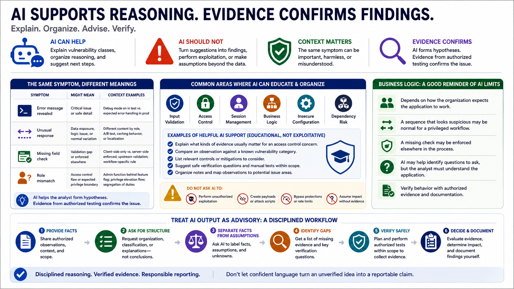

AI-Assisted Vulnerability Reasoning
Connecting to LMS... Progress: in progress

Narration
AI can help explain vulnerability classes and organize reasoning, but it should not turn suggestions into findings. In web assessment, the same symptom can have different meanings depending on context. An error message, unusual response, missing field check, or role mismatch may be important, harmless, or misunderstood. AI can help the analyst form hypotheses, but evidence confirms the issue.
Input validation, access control, session management, business logic, insecure configuration, and dependency risk are common areas where AI can provide educational support. For example, it can explain what kinds of evidence usually matter for an access control concern or help compare an observation against a known vulnerability category. It should not be asked to perform unauthorized exploitation or make assumptions beyond the data provided.
Business logic issues are a good reminder of AI limits. These findings often depend on how the organization expects the application to work. A sequence that looks suspicious may be normal for a privileged workflow. A missing check may be enforced elsewhere. The assistant may help identify questions to ask, but the analyst must understand the application and verify behavior with authorized evidence.
Treat AI output as advisory. Useful prompts ask the assistant to separate facts from assumptions, list missing evidence, suggest safe verification questions, or draft a finding only after the analyst provides confirmed observations. This workflow encourages disciplined reasoning. It also reduces the risk that confident language turns an unverified idea into a reportable claim.